Video look 4/4: the Look section (#938)
Playwright screenshots (tests/studio.spec.ts, UI_CHECK), desktop 1280×720 and phone (Pixel 7).
Make video, the Look section from the saved default, with its sample
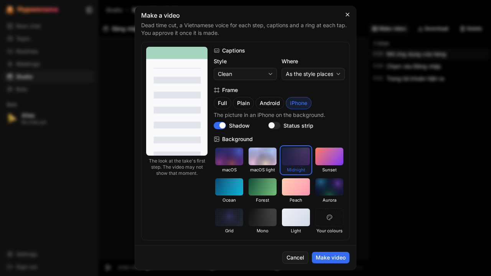
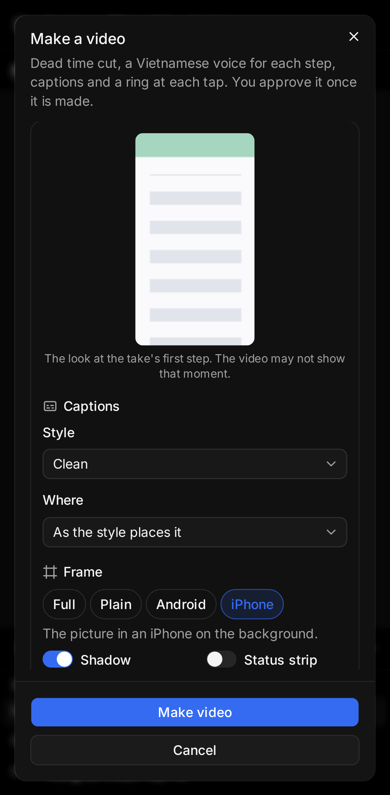
Make video, the backgrounds: autodemo's eleven and your two colours

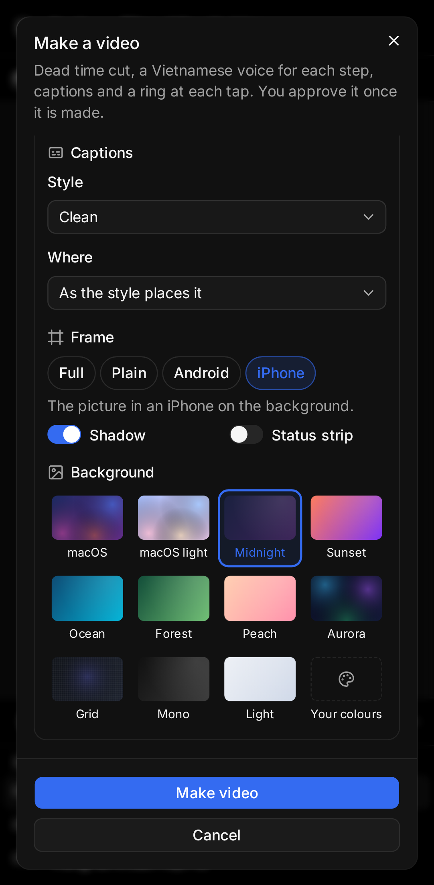
A look sample refused (429: another sample is being made)
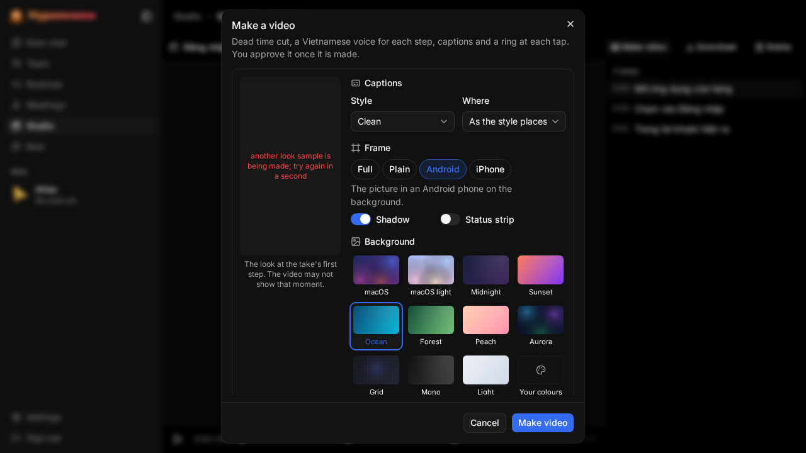
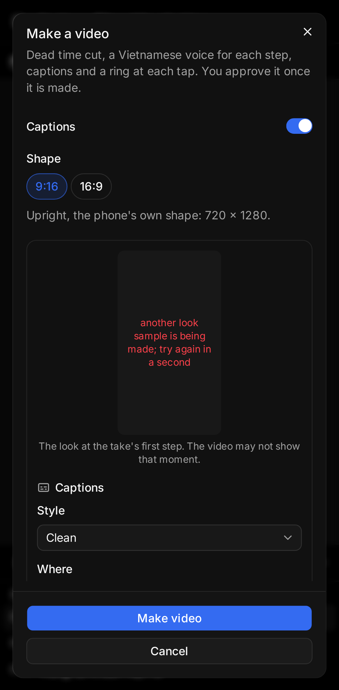
A take whose phone turned: Android chosen is refused, in the sample and at Make (409)
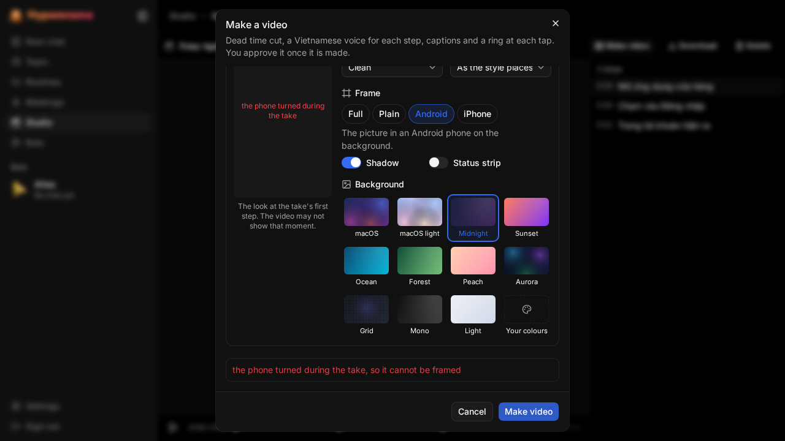
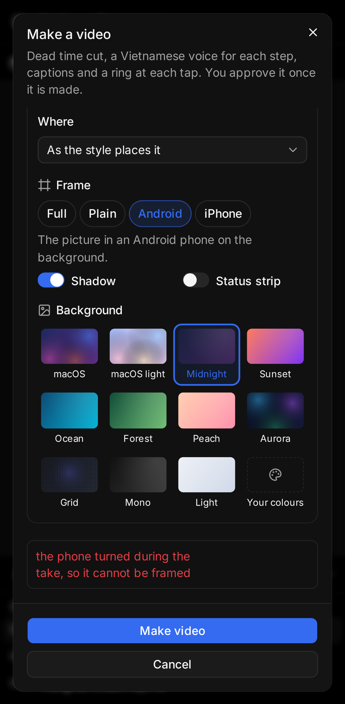
A made revision: Change look in the review's header
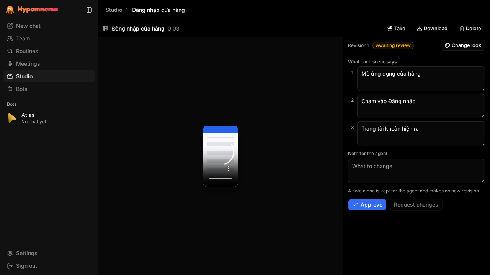
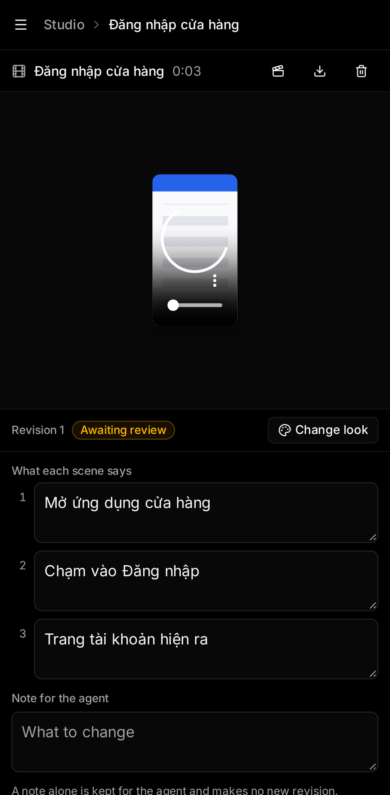
Change look, from the revision's look, with two colours
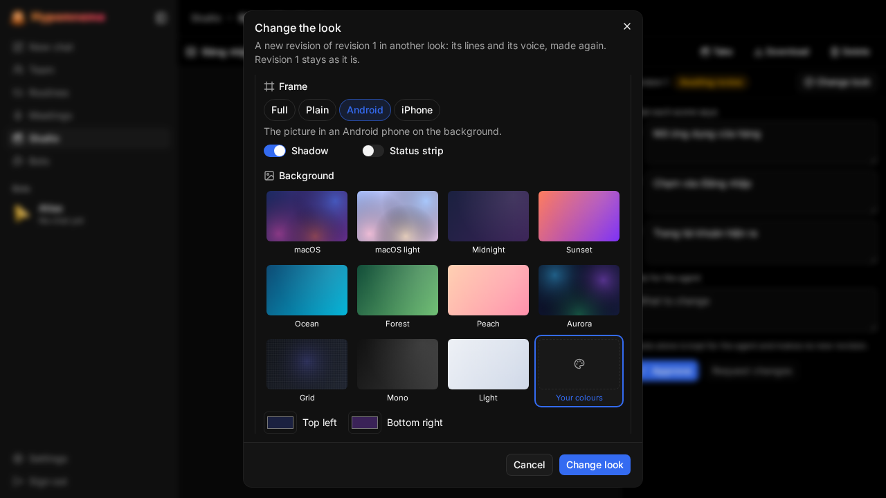
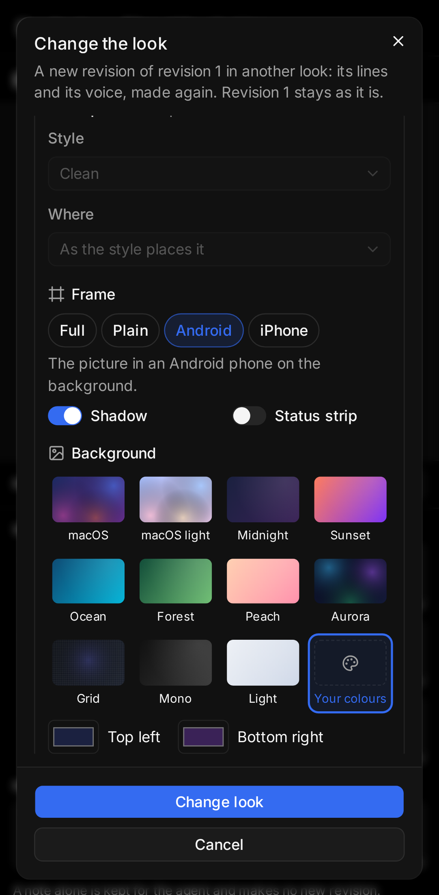
Change look, a background changed, the sample drawn from the revision
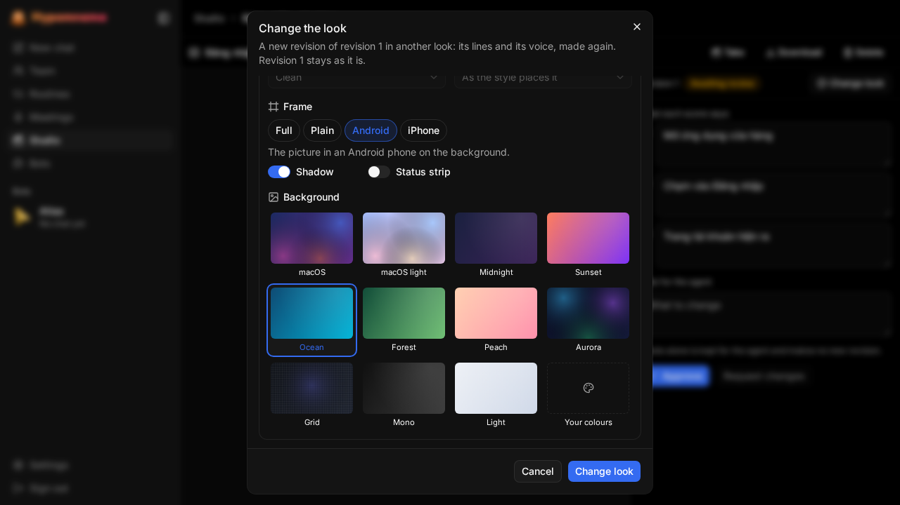
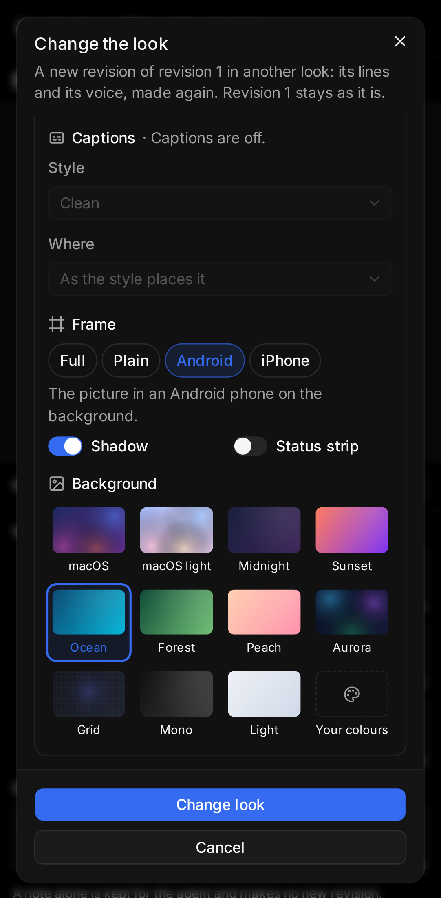